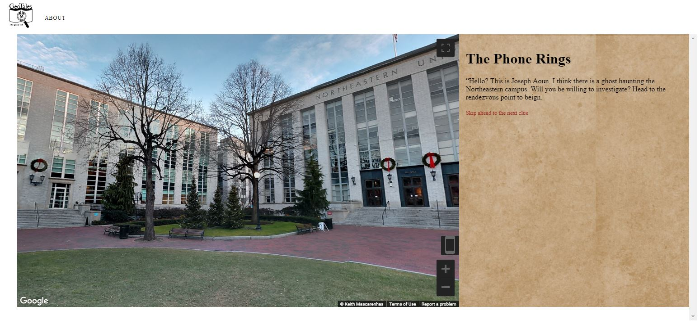
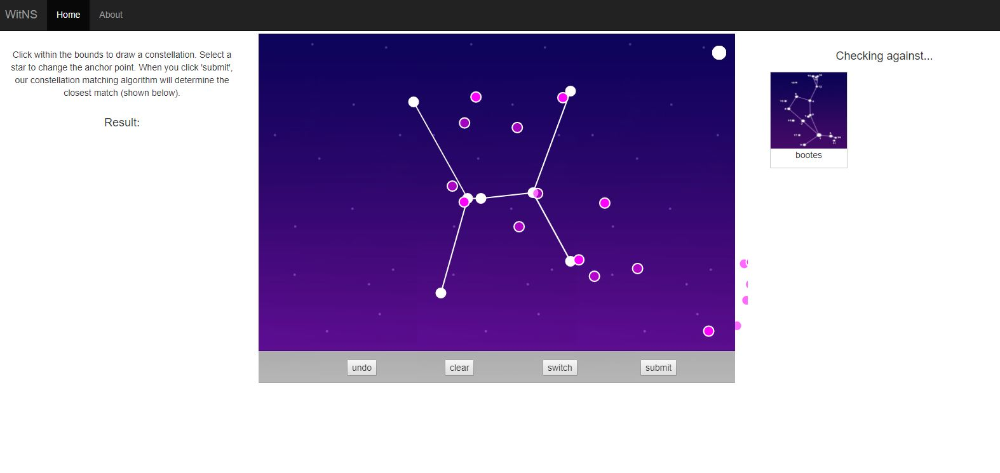
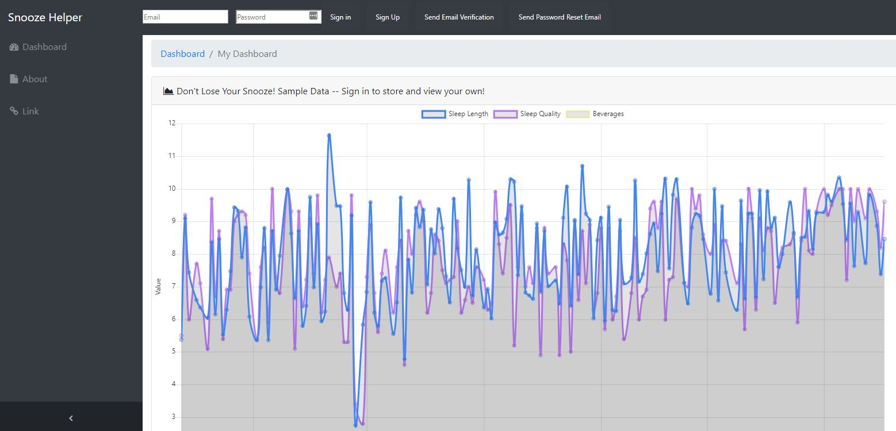
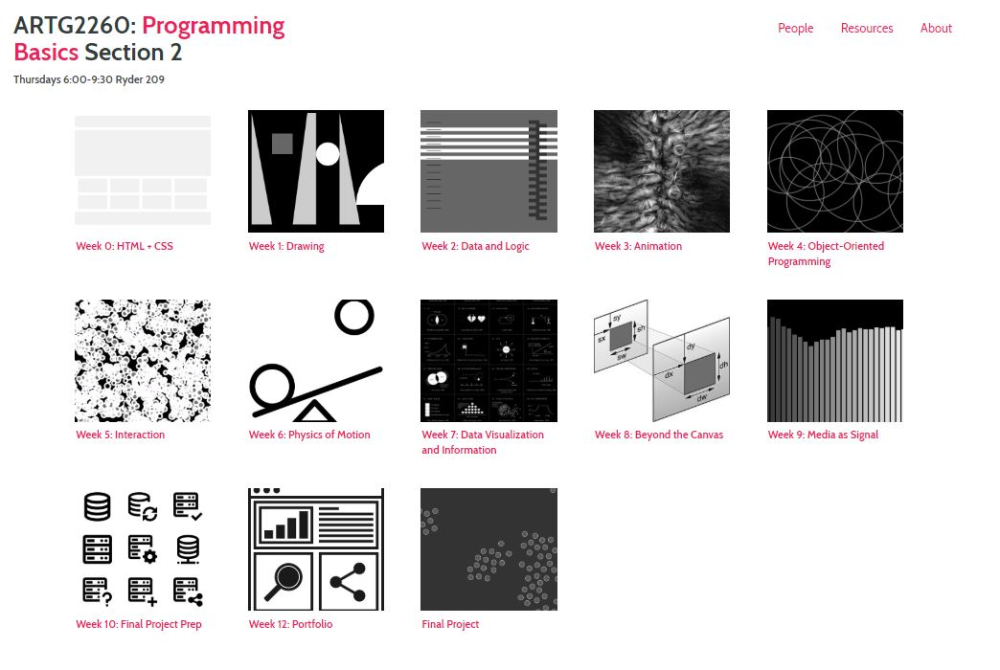

<div class="row">
  <div class="col-sm-12">
    <div id="carouselExampleControls" class="carousel slide" data-ride="carousel">
      <ol class="carousel-indicators">
        <li data-target="#carouselExampleControls" data-slide-to="0" class="active"></li>
        <li data-target="#carouselExampleControls" data-slide-to="1"></li>
        <li data-target="#carouselExampleControls" data-slide-to="2"></li>
        <li data-target="#carouselExampleControls" data-slide-to="3"></li><!-- 
        <li data-target="#carouselExampleControls" data-slide-to="4"></li>
        <li data-target="#carouselExampleControls" data-slide-to="5"></li>
        <li data-target="#carouselExampleControls" data-slide-to="6"></li>
        <li data-target="#carouselExampleControls" data-slide-to="7"></li>
        <li data-target="#carouselExampleControls" data-slide-to="8"></li>
        <li data-target="#carouselExampleControls" data-slide-to="9"></li> -->
      </ol>
      <div class="carousel-inner" role="listbox">
        <div class="carousel-item active">
          
        </div>
        <div class="carousel-item">
          
        </div>
        <div class="carousel-item">
          
        </div>
        <div class="carousel-item">
          
        </div>
        <div class="carousel-item">
          
        </div>
        <!-- <div class="carousel-item">
          
        </div>
        <div class="carousel-item">
          
        </div>
        <div class="carousel-item">
          
        </div>
        <div class="carousel-item">
          
        </div>
        <div class="carousel-item">
          
        </div>
        <div class="carousel-item">
          
        </div> -->
      </div>
      <a class="carousel-control-prev" href="#carouselExampleControls" role="button" data-slide="prev">
        <span class="carousel-control-prev-icon" aria-hidden="true"></span>
        <span class="sr-only">Previous</span>
      </a>
      <a class="carousel-control-next" href="#carouselExampleControls" role="button" data-slide="next">
        <span class="carousel-control-next-icon" aria-hidden="true"></span>
        <span class="sr-only">Next</span>
      </a>
    </div>

    <div class="main-text hidden-xs">
      <div class="projDesc">
        <h2>PROGRAMMING BASICS</h2> 
        <p><a href='../17_neu/home'>Northeastern University, 2017-2018 </a><br>  <br> 

        Course materials for my section of ARTG2260: Programming Basics at NEU's College of Art Media and Design can be found <a href='https://nathanmelenbrink.github.io/artg2260/'> here</a>. Some final projects include <a href='https://hart890.github.io/ART2260_FinalProject/Game_Files/gamescreen.html?'> GeoTales</a>, an application that uses Google Maps + Street View for interactive urban storytelling and <a href='https://nicolettemaria.github.io/artg2260_finalproject/framework/'>What in the Night Sky?</a>, which uses an evolutionary algorithm to detect which constellation you've drawn, and then gives you a score for accuracy.

      
        <!-- Images: <a href='https://www.unstudio.com/en/page/3388/financial-street-hailun-centre'>UNStudio</a>
 -->
 
        </p>
     </div>
    </div>
  </div>
</div>